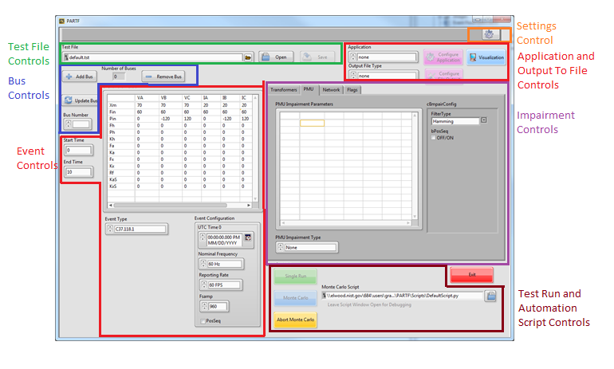
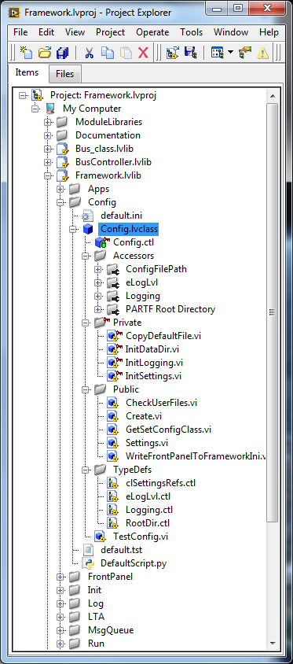
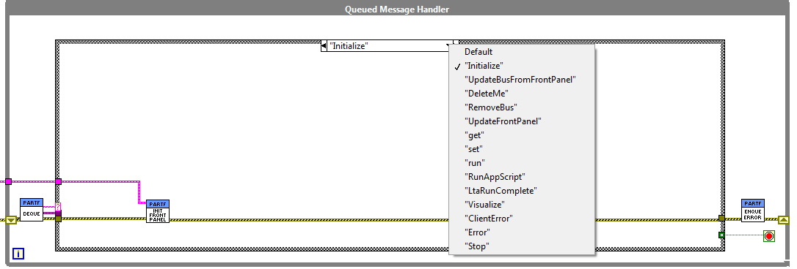
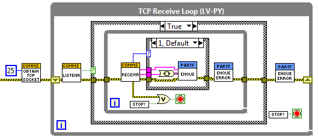
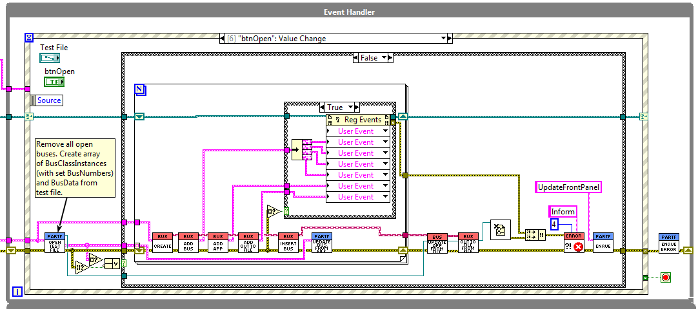

7. Framework Software Reference¶
This section details the software of the PART Framework. This description is intended for programmers who may be modifying the framework main program software. This section may be skipped by those only interested in developing module plug-ins.
Figure 4: Framework front panel
The framework launches all module instances (called clones). Once a clone is launched it runs independent of the framework. The framework communicates with the clone through the module API. Other applications can also communicate and control clone behavior once launched. The framework also launches the application module and facilitates data flow to and from it. The framework also provides the user interface for configuration and operation of the modules and application.
Figure 4 diagrams some of the functional sections of the framework. This document will not go into the details of operation, for that, see the PARTF User’s Manual. The framework is written in LabVIEW. Under the Labview develipment environment a “Framework” project contains all files necessary to run the framework in the development environment or to build an executable vetrsion of the framework and all modules.

Figure 5: Framework LabVIEW project
The framework is launched in the development environment by running the “main.vi” under the Framework\Framework folder.

Figure 6: Framework “main.vi” block diagram
Figure 6 shows the block diagram of the top-level framework “main.vi”. After some initialization, the program operates in three loops. The upper and lower loops are both producer loops and the middle loop is a consumer loop. This architecture is known as a “queued message handler, as the producer loops place commands and data into the front (or back) of a queue, and the consumer loop, called a “queued message handler” removes commands and data from the queue and acts upon them. The middle loop can also place commands into the queue and behave like a state machine.
7.1. Framework start-up¶

Figure 7: Framework startup code
Figure 7 illustrates the left-hand side of the framework “main.vi” block diagram. The software begins with the creation of a Configuration class object described in 3.1.1.1. Two sets of control references are bundled together, the top one will be controls that become enabled or disabled when any buses exist, (for example, you cannot run a test if there are no buses, so the test controls are disabled.) the middle group are most of the front panel controls that get used or updated during framework operation. Outlined in red in Figure 1Figure 7, Module Broadcast user events become registered. Each module has its own set of broadcast user events which the framework and other software can register to receive. this will be discussed in detail in several later sections of this document. At the bottom, the Consumer loops Queue is initialized and a TCP socket is created tor the test automation producer loop.
7.2. Configuration Class¶
Figure 8: LabVIEW project Config class
The first time the framework is started, two sets of user folders are created:
- A PARTF folder is created in the users AppDataLocalfolder. this location holds log files and a framework startup “PARTF.ini” file. when the framework is normally shut down, the state of all frontpanel controls are stored in the PARTF.ini file.
- A PARTF folder is created in the users “My Documents” folder. Three sub-folders are also created:
- Test: holds the default and any test (“.tst”)files created by the user
- Script: holds the default and any test automation scripts created by the user.
- Output holds test run output files.
Users may later change the location of any of these folders using the “settings” button, which calls up the settings dialog.
The config class “Create.vi” checks for the existance of the PARTF.ini file in the users AppData folder, if it is not found, the folder and a default .ini file is created, if it does exist, the .ini file contents are read and the Config class is initialized.

Figure 9: config class properties
7.3. Framework Event Handler Producer Loop¶
Figure 10 shows the Frameworks upper loop, this is a producer loop supporting an event handler. The figure shows the drop-down list of all events handled by the event handler loop.

Figure 10: Framework Event Handler
Events 0 through 25 of the event handler loop all handle framework front panel controls. The remaining events handle some but not all of the module broadcasts. The module broadcasts that it does handle, all have to do with starting, and stopping the modules or receiving status or error messages from the module. the framework logs module statud messeges and presents error messeges to the users so they can decoide how to handle the error.
7.4. Framework Queued Message Handler Consumer Loop¶
Figure 11 shows the QMH loop and all of the commands that it handles. At the beginning of this loop, messages consisting of a string “command” and a variant “data” is de-queued and presented to the QMH case structure. If there is no message in the queue, the loop waits until one is queued by one of the producer loops.
Figure 11: Framework Queued Message Handler Consumer Loop
The first message placed into the QMH is “Initialize”, and the action is to read the appropriate sectiions of the PARTF.ini file in the users AppData\Local\PARTF folder and to initialize all the front panel controls as they were left the last time the program was exited. Some messages in the QMH contain both a string command and data in a LabVIEW “variant” datatype. when Data is present, the command case must know which data type to expect and must use a LabVIEW “Unflatten from Varient” vi with the correct data typedef to cast the variant into the expected datatype.
7.5. Framework TCP Receive Producer Loop¶
The bottom loop in the Framework “main.vi” is shown in Figure 12. This loop receives QMH messages from the test automation program. While the PARTF framework support launching Python scripts from the front panel, Test Automation programs can actually be written in any language and “get” and “set” module data and run tests from any application that can connect to the port on which the TCP Receive loop is listening.
Figure 12: TCP Receive Producer Loop
Detailed information about Test Automation will be presented in a later section of this document.
7.6. Framework Front Panel Initialization¶
The “Initialize” state of the QMH is called when the QMH loop starts The “InitFrontPanel” vi is found in the project Framework.lvlibInit folder. This VI is a stater machine that loops through a series of case statements:
- PopTypes loops through each of the six module types and populates the front panel module type listboxes with the type names of each available module plugins. Plugin types are found in the [type] key in each plugin’s .ini file.
- OpenIni opens the .ini file found in the users AppData\Local\PARTF folder. This .ini file holds the frontpanel control values from the last time the PARTF was exited. On the first run of the PARTF, the default values are used.
- InitTypes sets all the module plugin values to the last values.
- InitParams sets all the module Parameter controls to the former values.
- EvtConfig seta the event configuration control to the previous values.
- PMUConfig sets the PMU Impairment configuration, the test file name, the script name, and the ShowPanels control to the former values.
- NumBuses cleard the Number of busses and the Active bus controls.
- End closes the PARTF.ini file and exits the state machine.
7.7. Changing the module type¶
When a module plug-in type text ring control on the front panel is changed to a different plug-in type, the default configuration values, parameter values and parameter control row and column headings from that plug-in type must be loaded from the appropriate plug-in type .ini file. The front panel controls are updated with those values.
7.7.1. Plug-in .ini files¶
Each plug-in .ini file contains the path to a plug-in lvclass file, it contains the Type Name, and default configuration and parameter setting data as well as a list of parameter control row and column headings. During framework initialization, the framework finds all of the event plug-in .ini files that are in the correct path locations. The program reads the Event Names from each of them and populates the Event Type text ring. The framework .ini file (in the users AppDataPARTFFramework folder) contains the event type that was last selected by the user. The framework finds that event type in the enum and, if found, loads the default settings of that plug-in type. If the last used event type is not found, then the framework loads the Steady State. A FrameworkData structure carries an array of .ini file paths that are linked by index to the event types in the Event Type text ring.
7.8. Starting and Stopping Modules¶
Modules are started and stopped by the framework while adding a single bus or opening a “.tst” file which can create one or more buses. A bus is a collection of modules including Event, Transformer (under development), Sensor, Networking, and Status. When the first bus is created, an Application Module and an Output to File Module is also launched, there is only one of each of these active no matter how many buses exist. The Applications and OutputToFile modules only stop after the last bus has been removed. Buses can be created one at a time using the “Add Bus” button, or launched all together using the “Open” test file button. When a bus is launched, the following sequence occurs:
- A Bus Class object is created. One Bus class object exists for each bus. An array of references to all Bus Class objects is stored in a memory object (called a “functional global”) called “GetSetFrameworkData.vi
- All the modules of the bus are started in parallel, after starting, the framework waits for a synchronization event to occur in each module so that no requests can be sent to a module that is not ready to receive requests.
- If the bus is the first to be launched, then an Application Module is started also. If any buses already exist, then the App module is already running.
- If this bus is the first to be launched, then an OutToFile Module is started also. If any buses already exist, then the module is already running.
- A reference to the new bus class object is inserted into the array of bus references in GetSetFrameworkData.vi
- For each of the modules in each bus, the following sequence occurs:
- The plugin selected by the plugin selector is loaded into the module. the plugin selector may be from the front panel (in the case of the “Add Bus” button) or from a “.tst” file in (the case of the “Open button) having launched the bus
- The configuration and parameter data from the front panel or from the .tst file is written to the module.
7.8.1. Adding, updating, deleting a Bus¶
Once the framework is initialized, there are 0 buses. The user can make changes to the parameters or leave the default values as they are. When the module configuration and parameters are set to the user’s liking, the user creates a bus by clicking the Add Bus button. When a bus is added, the Bus class create method spawns new Event and Impairment modules (one of each) and sets the data values from the Framework front panel.
When more than one bus has been created, the user can select which bus parameters are displayed by changing the Bus Number drop-down control. Bus numbers are in the order they were created. When the user changes the Bus Number, then the values from that bus are read from the modules and displayed on the front panel. The user can make changes to the frontpanel values and press the update button, which will send those values to the bus displayed and the bus will in turn update the module. The user can also add additional buses which will then be configured with the values from the frontpanel.
Deleting a bus, destroys that instance of the Bus class, closing its Event and PMUImpairment modules, and removing that bus from the array of buses.
7.8.2. Adding a single bus¶
The user can add a single bus which uses the module configuration and parameters shown in the front front panel by clicking on the “Add Bus” button. Figure 16 shows the sequence of .vis that operate. To begin with a Bus class object is created. See Section 4 for details on the Bus Class.

Figure 16: Adding one bus
When a Bus Class Object has between created its reference is passed to the AddBus.vi shown in Figure 17. This VU calls the Event, PMUImpair, Network and Flag modules “StartClone.vi”s in parallel. A clone for each of the module is started, and the ID’s are placed into the Bus Class object’s property. Since requests should not be sent to a module before it is ready to receive them, the ADDBus VI waits for each module to produce a Sync Event.

Figure 17: AddBus.vi
Following the creation of the four modules that exist for each bus, there are two modules that need to be started if the bus created is the first bus. These are the App and OutToFile modules, which start in a similar manner to the other modules.
After the modules are created, the bus class object are added to an array of bus objects stored in a functional global called “getSetFrameworkData” as shown in Figure 18. This “FRDATA” vi can be found in the Framework.lvlib\Init folder.

Figure 18: InsertBus.vi
Next, each of the module type’s “Update___”.vi is called. each of these run a short script to load the selected plug-in and send the config data and parameters from the fornt panel controls to each of the modules. the script is executed by a bus-class private method called the “Scripted state machine with is described in detail in section 4.4
7.8.3. Adding one or more buses from a .tst file¶
Figure 19: Opening a .tst file
Figure 19 shows what happens when the “Open” button is clicked. “.tst” files contain information about module plug-ins, configurations, and parameters for one or more buses. The first thing that happens is any busses that are running are removed and all of their modules closed. The “.tst” file is opened and an array of bus data, one element for each of the buses in the file is created. this array is passes to a do loop which goes through the same process as opening one bus for each of the buses in the array. the only difference is instead of updating the module config and parameter data from the front panel controls, the information comes from the bus data array read from the .tst file. finally, an App module and OutToFile maoduelare started and updated from their config and parameter data read from the .tst file. at the end of the process, an UpdateFrontPanel message is queued so the QMH loop can read one set of modules and reflect their settings in the framework’s front panel controls.